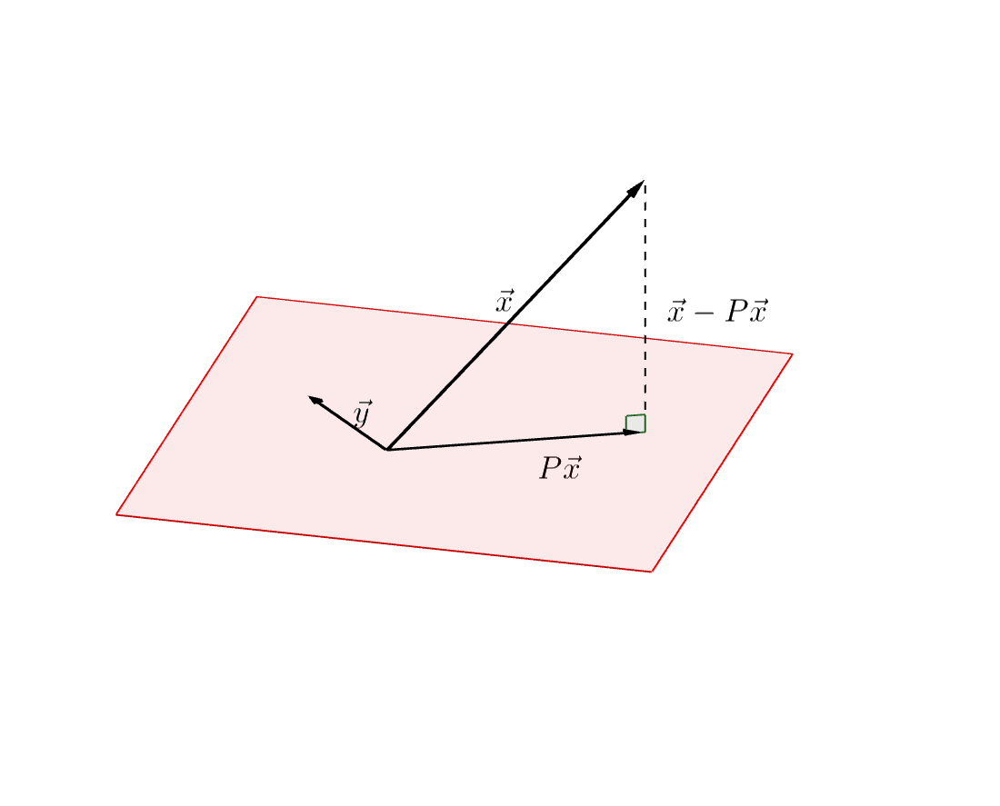
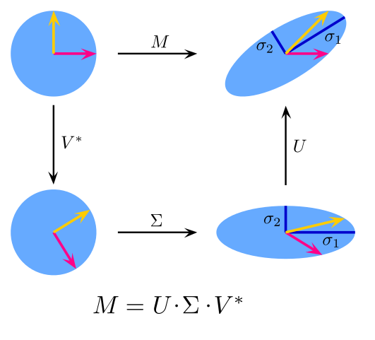

2025-01-05
Concepts such as distance, orthogonality and convergence are based on a scalar product and its induced metrics. As such, we’ll introduce the definitions of these concepts.
Definition 1: Norm
Let \(V\) be a real (or complex) vector space. A mapping \[ \lVert \,\cdot\,\rVert : V \to [0, \infty) \]
with the properties
is called a norm on \(V\).
Examples for norms on \(\mathbb{R}^n\) are the 1-norm, the maximum-norm and the Euclidean norm.
\[ \begin{aligned} \lVert \mathbf{x} \rVert_1 &= \sum_{i=1}^n \lvert x_i \rvert, & \lVert \mathbf{x} \rVert_2 &= \left( \sum_{i=1}^n x_i^2 \right)^{1/2} \\ \lVert \mathbf{x} \rVert_\infty &= \max_{1 \leq i \leq n} \lvert x_i \rvert & \lVert \mathbf{x} \rVert_p &= \left( \sum_{i=1}^n \lvert x_i \rvert^p \right)^{1/p} \end{aligned} \]
Graphing the p-Norm Unit Ball in 3 Dimensions is not trivial; For more info, read this post by Kayden Mimmack, 2019.
Definition 2: Convergence
A sequence \((\mathbf{x}_n)_{n \in \mathbb{N}} \subseteq V\) is called a Cauchy-sequence, if for all \(\varepsilon \gt 0\) there exists an \(N \in \mathbb{N}\), such that \[ \lVert \mathbf{x}_n - \mathbf{x}_m \rVert \lt \varepsilon \qquad \forall n,m\gt N. \]
It is called convergent to the limit \(\mathbf{x} \in V\) if:
\[ \lVert \mathbf{x}_n - \mathbf{x} \rVert \to 0 \]
A space in which all Cauchy sequences converge is called complete.
A completely normed space is called a Banach space.
Equivalence of Norms
Two norms \(\lVert \cdot \rVert_a\) and \(\lVert \cdot \rVert_b\) are called equivalent, if there exist constants \(\alpha, \beta \gt 0\) such that \[ \alpha \lVert \mathbf{x} \rVert_a \leq \lVert \mathbf{x} \rVert_b \leq \beta \lVert \mathbf{x} \rVert_a \qquad \forall \mathbf{x} \in V. \]
If two norms are equivalent, then any sequence that is convergent with respect to \(\lVert \cdot \rVert_a\) is also convergent with respect to \(\lVert \cdot \rVert_b\).
Theorem
In a finite-dimensional vector space, all norms are equivalent.
Proof. See handwritten notes 1
Theorem
Any finite dimensional normed space is a Banach space.
Proof. See handwritten notes 2.
Definition 3: Hilbert-space
A mapping \(\langle \cdot, \cdot \rangle : V \times V \to \mathbb{R}\) is called scalar product, if it has the following properties:
A vector space equipped with a scalar product is called a pre-Hilbert space.
For a scalar product there holds the Cauchy-Schwarz inequality:
\[ \lvert \langle \mathbf{x}, \mathbf{y} \rangle \lvert \leq \lVert \mathbf{x} \rVert \, \lVert \mathbf{y} \rVert \]
Every pre-Hilbert space is a normed space with canonical norm \(\lVert \mathbf{x} \rVert := \sqrt{ \langle \mathbf{x}, \mathbf{x} \rangle}\). If the vector space is complete with respect to this norm, it is called a Hilbert space.
The dot product can be used to measure the angle between two vector in \(\mathbb{R}^n\):
\[ \lvert \langle \mathbf{x}, \mathbf{y} \rangle \rvert = \lVert \mathbf{x} \rVert \, \lVert \mathbf{y} \rVert \cos(\alpha) \]
Two vectors are orthogonal, in symbols \(\mathbf{x} \perp \mathbf{y}\), if their dot product is 0.
The orthogonal projection \(P\mathbf{x}\) of a vector \(\mathbf{x}\) to a subspace \(M \subseteq V\) is determined by \[ \lVert \mathbf{x} - P \mathbf{x} \rVert = \min_{y \in M} \lVert \mathbf{x} - \mathbf{y} \rVert. \]

This is often called best approximation property and is equivalent to the relation \[ \langle \mathbf{x} - P \mathbf{x}, \mathbf{y} \rangle = 0 \quad \forall \mathbf{y} \in M. \]
Proof. See (Wendland 2018, Proposition 1.17 (p. 23)).
Another useful inequality is the Hölder inequality, a generalization of the Cauchy-Schwarz inequality:
Hölder inequality
For any vectors \(\mathbf{x}, \mathbf{y}\) and positive numbers \(p, q\) with \(1/p + 1/q = 1\), it is \[ \lvert \langle \mathbf{x}, \mathbf{y} \rangle \rvert \leq \lVert \mathbf{x} \rVert^p + \lVert \mathbf{y} \rVert^q \]
Let \(\{ \mathbf{q}_1, \dotsc, \mathbf{q}_n \}\) be a Orthonormalbasis (ONB) of \(V\). Then each vector \(\mathbf{x} \in V\) possesses a representation of the form \[ \mathbf{x} = \sum_{i=1}^n \langle \mathbf{x}, \mathbf{q}_i \rangle \, \mathbf{q}_i \]
and there holds the Parseval identity:
\[ \lVert \mathbf{x} \rVert_2^2 = \sum_{i=1}^n \lvert \langle \mathbf{x}, \mathbf{q}_i \rangle \rvert^2 \]
The Gram-Schmidt-algorithm can be used to construct an ONB from an arbitrary basis:
Theorem: Gram-Schmidt-algorithm
Let \(\{\mathbf{v}_1, \dotsc, \mathbf{v}_n\}\) be an arbitrary basis of \(V\). Then the following algorithm results in a ONB \(\{\mathbf{u}_1, \dotsc, \mathbf{u}_n\}\):
\[ \begin{aligned} %\mathbf{u}_1 &= \frac{\mathbf{v}_1}{\lVert \mathbf{v}_1 \rVert}, \\ \widetilde{\mathbf{u}}_k &= \mathbf{v}_k - \sum_{j=1}^{k-1} \frac{\langle \mathbf{v}_k, \mathbf{u}_j \rangle}{ \lVert \mathbf{u}_j \rVert^2} \mathbf{u}_j \\ \mathbf{u}_k &:= \frac{\widetilde{\mathbf{u}}_k}{\lVert \widetilde{\mathbf{u}}_k \rVert} \end{aligned} \]
A mappinng \(\varphi: \mathbb{R}^n \to \mathbb{R}^m\) is called linear, if: \[ \varphi(a\mathbf{x} + b \mathbf{y}) = a \varphi(\mathbf{x}) + b \varphi(\mathbf{y}) \]
We can describe a linear mapping with a matrix \(A\) and the usual rules for matrix-vector multiplication. \[ A = \begin{pmatrix} a_{11} & \dots & a_{1n} \\ \vdots & & \vdots \\ a_{m1} & \dots & a_{mn} \end{pmatrix} , \qquad (A\mathbf{x})_i = \sum_{j=1}^n A_{ij} x_j \]
A linear operator \(A: X \to Y\) is called bounded, if there is a constant \(C \gt 0\) such that \[ \lVert A \mathbf{x} \rVert_Y \leq C \lVert \mathbf{x} \rVert_X . \]
For any bounded operator we can define the operator norm via \[ \lVert A \rVert := \sup_{\lVert \mathbf{x} \rVert = 1} \lVert A \mathbf{x} \rVert. \] The operator norm is the smalles possible bound and we have \(\lVert A \mathbf{x} \rVert \leq \lVert A \rVert \, \lVert \mathbf{x} \rVert\) for any \(\mathbf{x}\).
For a given a matrix \(A\) we can define the transposed matrix \(A^\intercal\): \[ A^\intercal := \begin{pmatrix} a_{11} & \dots & a_{m1} \\ \vdots & & \vdots \\ a_{1n} & \dots & a_{mn} \end{pmatrix}, \]
A matrix \(A \in \mathbb{R}^{n\times n}\) is called
Orthogonal matrices \(Q\) are the mapping matrices of isomatric transformations, i.e. they do not change the norm of a vector under transformation:
\[ \lVert Q \mathbf{x} \rVert = \lVert \mathbf{x} \rVert \]
This can be seen via: \[ \lVert Q\mathbf{x} \rVert^2 = \langle Q\mathbf{x}, Q\mathbf{x} \rangle = (Q \mathbf{x})^\intercal Q\mathbf{x} = \mathbf{x}^\intercal Q^\intercal Q \mathbf{x} = \lVert \mathbf{x} \rVert^2 \]
We can think of orthogonal transformations as rotations and reflections. For example, \[ Q_\alpha = \begin{pmatrix} 1 & 0 & 0 & 0 & 0 \\ 0 & \cos(\alpha) & 0 & -\sin(\alpha) & 0 \\ 0 & 0 & 1 & 0 & 0 \\ 0 & \sin(\alpha) & 0 & -\cos(\alpha) & 0 \\ 0 & 0 & 0 & 0 & 1 \end{pmatrix} \] is a rotation matrix in the \(\mathbf{x}_i\,\mathbf{x}_j\) plane and angle \(\alpha\).
As already mentioned, a matrix norm can be induced from a given vector norm; in this sense we define \[ \begin{align*} \lVert A \rVert_1 &:= \max_{j=1, \dotsc, n} \sum_{i=1}^n \lvert a_{ij} \rvert, \\ \lVert A \rVert_\infty &:= \max_{i=1,\dotsc,n} \sum_{j=1}^n \lvert a_{ij} \rvert \end{align*} \]
Computing the 2-norm of a matrix is not that simple. As it turns out, it is related to the spectral radius of the matrix: \(\lVert A \rVert_2 = \rho(A)\). However, we can get an upper bound on the 2-norm by using the Frobenius norm.
\[ \lVert A \rVert_2 \leq \lVert A \rVert_F = \sum_{i,j=1}^n \lvert a_{ij} \rvert^2 \]
Exercise
Show that the matrix norms above are indeed induced by their given vector norms; i.e., show that \[ \sup_{\lVert \mathbf{x} \rVert_\infty = 1} \lVert A \mathbf{x} \rVert_\infty = \max_{i=1,\dotsc,n} \sum_{j=1}^n \lvert a_{ij} \rvert \]
Theorem: Schur decomposition
For every matrix \(A \in \mathbb{R}^{n\times n}\) with real Eigenvalues, there exists an orthogonal matrix \(U\) such that \[ U^\intercal A U \] is an upper triangle matrix.
Proof. The proof is a bit technical. I refer to the standard literature on linear algebra:
As a direct result, we obtain the spectral decomposition for symmetric matrices:
Theorem: Spectral decomposition
If \(A \in \mathbb{R}^{n \times n}\) is symmetric, then there is an orthogonal matrix \(U\) such that \[ U^\intercal A U = D \] is a diagonal matrix with the Eigenvalues of \(A\) as diagonal entries.
Proof. (draw on slides)
Note that \(A^\mathrm{T} A\) is symmetric for any matrix A. This means that by applying the previous theorem to \(A^\intercal A\) we can get a generalisation for non-symmetric matrices:
Theorem: The Singular Value Decomposition (SVD)
Let \(A \in \mathbb{K}^{n \times n}\) be arbitrary real or complex. Then, there exist unitary matrices \(V \in \mathbb{K}^{n \times n}\) and \(U \in \mathbb{K}^{m \times m}\) such that \[ A = U \Sigma V^\ast, \quad \Sigma = \mathrm{diag}(\sigma_1, \dotsc, \sigma_p) \in \mathbb{R}^{m \times n}, \quad p = \min(m, n) \] where \(\sigma_1 \geq \sigma_2 \geq \dotso \sigma_p \geq 0\).
Depending on whether \(m \leq n\) or \(m \geq n\) the matrix \(\Sigma\) has the form \[ \left( \begin{array}{ccc|c} \sigma_1 \\ &\ddots & & 0\\ & & \sigma_m \end{array} \right) \qquad \text{or} \quad \left( \begin{array}{ccc} \sigma_1 \\ &\ddots \\ & & \sigma_m \\ \hline & 0 \end{array} \right) \]
Proof. See Linear Algebra Done Right by Sheldon Axler, Springer (2025), Section 7.E.
From a visual point of view, the SVD can be thought of as a decomposition into a shear and two rotations.

The Singular value decomposition has applications in machine learning, where it is often used for dimensionality reduction.
Definition: Contraction
An operator \(A: V \to V\) is called a contraction, if there exists a number \(0 \le q \leq 1\) such that \[ \lVert F(\mathbf{x}) - F(\mathbf{y}) \rVert \leq q \lVert \mathbf{x} - \mathbf{y} \rVert. \]
{kind=link}